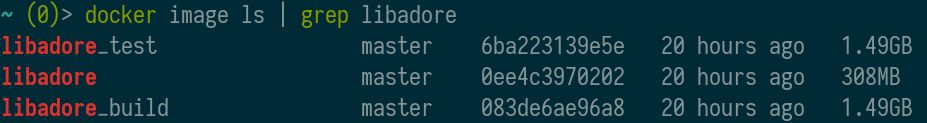
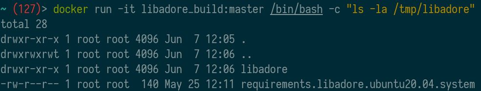
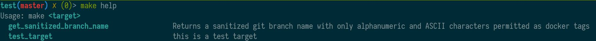
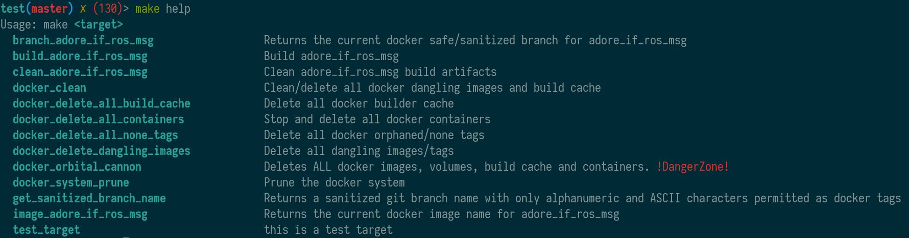
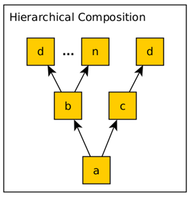
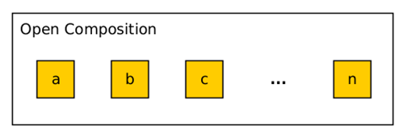

ADORe Build System
The ADORe build system is a docker build and runtime environment for ADORe.
Background
Although ADORe is primarily centered around ROS there is also stand-alone components in a conglomeration of technologies such as python, C++ and others. Each component could have their own respective build and run steps. The primary aim of the build system is to normalize complex build processes, as well as, provide a containerized runtime for these processes with a focus of configuration management of dependencies and software reuse.
Build interface normalization
The ADORe build system aims to provide per module predictable building and testing interfaces via GNU Make such as: 'make build', 'make test, and more.
GNU Make is not a new tool however it is stable and familiar to many developers. For this reason it was selected as the centralized "glue" for the ADORe build system. GNU Make offers "documentation-as-code" for ADORe capturing complex build, testing, and execution processes, steps, and commands into a single location. To discover the capabilities of a given module, or what a module can do, simple inspect the provided Makefile. It is up to the developer of a module to provide interesting or relevant targets for the project or module. At minimum 'make build', 'make test', and 'make clean' should be provided by a module. Review the modules section for more detail on what constitutes a module.
Dependency configuration management
In a standard Dockerfile it can be difficult to manage or version system dependencies because system dependencies are globed together often on one line. The following is a typical example that could be found in a Dockerfile for installing system dependencies following docker "best practices":
...
RUN apt-get update && apt-get install -y a b c && \
rm -rf /var/lib/apt/lists/*
...
The problem with this is dependencies tend to change while the build procedure may not. In this previous example the dependencies namely a, b, and c are all grouped on one line. This makes updating, versioning, tracking/documenting \ (where did the dependency come from or what needs it), and composing dependencies difficult.
The next example used throughout the ADORe build system adds complexity but also has a number of distinct benefits:
...
ARG REQUIREMENTS_FILE
...
RUN apt-get update && \
apt-get install --no-install-recommends -y $(sed '/^#/d' ${REQUIREMENTS_FILE} | sed '/^$/d') && \
rm -rf /var/lib/apt/lists/*
...
The previous example provides the following benefits:
- Dependencies can be tracked in an independent file such as in the case with adore_if_ros_msg: requirements.adore_if_ros_msg.ubuntu20.04.system If the base system is changed or upgraded then all that needs to be updated is the dependency file.
- There is one dependency per line such as the following example for g++
- Discovering dependencies within the system is easy
With the following shell command run on the top level of the ADORe project
all dependencies within the project can be discovered:
find -name "requirements.*.ubuntu20.04.system" - Composition of dependencies becomes trivial
- Building up new docker contexts that pull in dependencies from other modules is possible because the dependency files are separate
- Using sed to filter the dependency file allows the use of "#" comments within the file. This is useful to documenting/commenting and managing individual dependencies.
In general there will be a files/requirements.<module>.<base system>.system
file that contains all necessary dependencies for that module for example:
"requirements.adore_if_ros_msg.ubuntu20.04.system" which is the system
dependency file for adore_if_ros_msg. Furthermore, the system dependency files
can be segregated into separate files based off of life-cycle context such as
build dependencies and run dependencies. This is true for modules such as
libadore which has a build requirements file and a runtime requirements file.
Although, it is not strictly essential to separate build and runtime system
dependencies it makes management and composition of dependencies easier with the
effect of lowering overall docker context sizes.
Modules
ADORe relies heavily on git submodules for code reuse and boundaries.
- In general every directory is a module and potentially a stand-alone project
- Every module will provide a Makefile and a Dockerfile
- Every module will have at minimum a 'build' and 'clean' make target
Artifacts
Every module will generate artifacts in some form during their respective life-cycles. This section will detail the possible artifacts.
Build artifacts
Every module that produces build artifacts follows the same basic pattern. All
build artifacts generated by 'make build' will generate a build directory with
the following path: <repository name>/<module name>/build
This could contain binaries, cmake install prefix, headers, Debian packages
et cetera.
Docker images
In general every module will produce at least a build docker image. If a module requires a runtime context or other contexts these will be generated as well. For example on the module libadore. produces the following images:

In the case of libadore there is a docker context for build which contains only the build artifacts, a test context which can be used to execute unit tests and the main context. What docker images/contexts are produced with make build are dependent on the module needs.
The internal file system layout for each module will be the same and follow the
same pattern. All project files will be placed in /tmp/
In the case of project containing ROS packages the structure will be:
/tmp/<module name>/<module name> where the first directory contains the docker
context with Makefile and requirements file and the second directory with the
same module name will be a standard ROS package with a CMakeLists.txt,
package.xml and any other necessary files. Running 'ls' on the /tmp/libadore
directory within the libadore build context yields this familiar structure:

Log artifacts
Some modules produce log output during various life cycle phases for example
during build, test, or execution. This log output will be placed in the
following path: <repository name>/.log/.
Which logs a module generates is wholly dependent on the module in question.
For more information on this please refer to individual documentation within
a module.
Module anatomy
The following section will detail the basic anatomy of a module. At minimum every module will have a Makefile and a Dockerfile
Makefile
At minimum every module should have a Makefile with 'build' and clean 'targets' defined. The Makefile provides "documentation-as-code" so if you are wondering what capabilities a module offers the first place to look is the Makefile.
The makefile also provides important environmental variables for docker build and docker run such as a docker tag and potentially other important environmental variables relevant to the module.
In general every module should provide a make help target to guild users on
module capabilities. The 'help' target used throughout the ADORe ecosystem is a
spin on the following github gist: https://gist.github.com/prwhite/8168133 and is
provided by the make_gadgets project at: https://github.com/DLR-TS/make_gadgets.
Any Makefile that has include make_gadgets/make_gadgets.mk will have a
make help target.
Any target or recipe that has two hash symbols such as the following example Makefile:
include make_gadgets/make_gadgets.mk
.PHONY: test_target
test_target: ## this is a test target
echo "Hello, World!"
will output the comment and target name with the invocation of make help.
Calling make help on the previous example Makefile would then yield the
following:

As can be seen in the previous image the make_gadgets project also provides another very important recipe/target that is used throughout the ADORe ecosystem specifically the "get_sanitized_branch_name". Calling this target returns the branch name or hash that has been sanitized such that it can be used as a docker image tag. This will be further detailed in a later section.
For more information on how the help target works please review the documentation for https://github.com/DLR-TS/make_gadgets or the gist at https://gist.github.com/prwhite/8168133
The Makefile provides the primary means to interact with a module directly by navigating to a module and running make commands on the module.
Dockerfile
The Dockerfile is pretty self-explanatory and in general every module will have
a Dockerfile in its root. More dockerfiles may be provided by a module if
necessary depending if the module also requires runtime context. If there are
many docker files within a module then they can be organized in a subdirectory
called 'docker'. GNU Make is used primarily to invoke docker or
docker compose within ADORe.
Interface makefile .mk
Many modules within ADORe have two makefiles namely 'Makefile' and
'make build or make clean.
The second makefile having the same name of the module itself (for example in
adore_if_ros_msg: adore_if_ros_msg.mk) acts as the external interface for the
module. The basic question for this makefile is what behavior, context, and
environmental variables should be exported from the module.
This makefile will include the following:
- Important environmental variables for the module (such as docker tag)
- All the necessary make includes (does the module depend on other modules?)
- All targets that should be externally visible to downstream projects
The self-named makefile included in each module is the external interface for the module.
Take this minimal example makefile which includes adore_if_ros_msg.mk:
include make_gadgets/make_gadgets.mk
include adore_if_ros_msg/adore_if_ros_msg.mk
.PHONY: test_target
test_target: ## this is a test target
echo "Hello, World!"
By including adore_if_ros_msg.mk all of the exported targets are now available.
Calling make help now on this example Makefile yields the following output:

This allows composition of modules.
The self-named makefile previous discussed also provides a number of important dynamic environmental variables which follow the basic form:
<module name>_PROJECT
<module name>_MAKEFILE_PATH
<module name>_SUBMODULES_PATH
<module name>_TAG
<module name>_IMAGE
For example in the module adore_if_ros_msg the following environmental variables are provided:
ADORE_IF_ROS_MSG_IMAGE= ${ADORE_IF_ROS_MSG_PROJECT}:${ADORE_IF_ROS_MSG_TAG}
ADORE_IF_ROS_MSG_MAKEFILE_PATH= /home/akoerner/repos/csa/github.com/eclipse/test/adore_if_ros_msg
ADORE_IF_ROS_MSG_PROJECT= adore_if_ros_msg
ADORE_IF_ROS_MSG_SUBMODULES_PATH= /home/akoerner/repos/csa/github.com/eclipse/test/adore_if_ros_msg
ADORE_IF_ROS_MSG_TAG= master
The environmental variables that a module provides is up to the module author
but the previously detailed variables are common. The most important variable
being the <module name>_IMAGE, <module name>_PROJECT, and
<module name>_TAG variables which are all relevant for docker image building
and tagging.
'files' directory
By convention most modules include a 'files' directory; this files directory
contains any context that should be included during build using the docker
COPY key word such as entry point shell scripts, requirements files et cetera.
Module Composition
The ADORe build system offers two methods of module composition which will be detailed below.
Hierarchic Composition
In general a module only has visibility into the contents within said module. This allows modules to be cloned and operated on in complete isolation to parent context. This is useful for building up complex CI processes. The following image illustrates the concept:

A give module will have all necessary dependencies within it's tree. Any node within the tree can be cloned, built and tested in isolation. This requires recursive cloning; here is an example of adore_if_ros_msg being cloned, built and tested:
git clone git clone --recursive -j8 git@github.com:DLR-TS/adore_if_ros_msg.git
cd adore_if_ros_msg
make build
make test
Hierarchic composition has a number of benefits but also carries significant drawbacks. Development can be cumbersome because every reference to a module within a project then needs to be updated with any change.
Open Composition
To address the previously discussed drawback of hierarchic module composition open module composition is also supported within the ADORe ecosystem. This allows all modules to be placed in a flat directory structure. The pitfall being that all required modules must be present in this directory structure otherwise Make operations will fail.
The following image illustrates the concept of open module composition:

Open module composition is achieved by introducing the SUBMODULES_PATH
environmental variable. This must be defined either by the current environment
or by a parent Makefile when invoking a make action on a module.
If the SUBMODULES_PATH variable is not defined and a give module has not been
recursively cloned running any make target on a submodule/module will yield the
following error:
adore_if_ros_msg(e9019d5) (2)> make help
INFO: To clone submodules use: 'git submodule update --init --recursive'
INFO: To specify alternative path for submodules use: SUBMODULES_PATH="<path to submodules>" make build'
INFO: Default submodule path is: /home/akoerner/repos/csa/github.com/eclipse/adore/adore_if_ros_msg'
adore_if_ros_msg.mk:21: *** "ERROR: /home/akoerner/repos/csa/github.com/eclipse/adore/adore_if_ros_msg/make_gadgets
does not exist. Did you clone the submodules?". Stop.
To avoid this error the SUBMODULES_PATH environmental variable has to be
sourced. This can be done in one of two ways.
- source the provided adore.env file into your interactive shell. CD to the root of the adore project and run:
source adore.env
This will define and export the SUBMODULES_PATH environmental variable for you. After this you can go to any module and invoke make commands such as make build and make clean
- The second option is to simply provide the
SUBMODULES_PATHenvironmental variable directly when invoking make such as follows:
cd adore_if_ros_msg
SUBMODULES_PATH="$(realpath ..)" make build